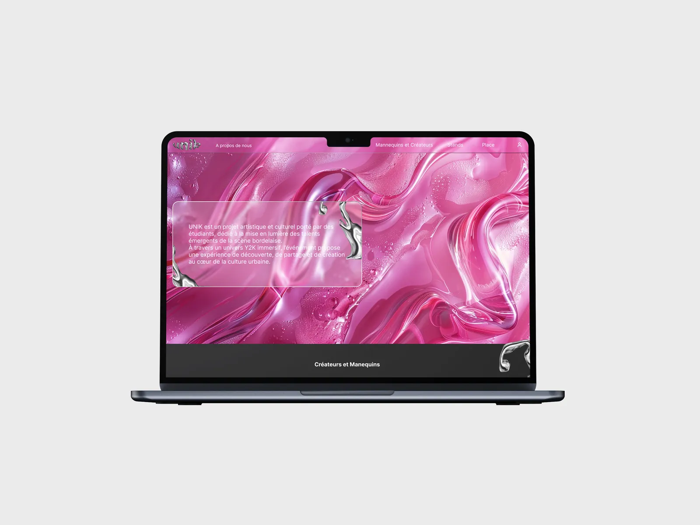
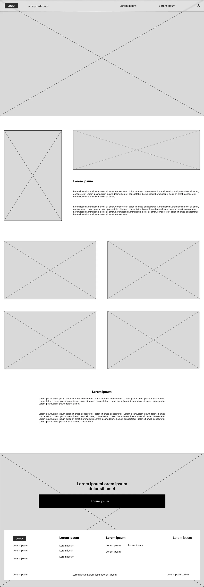
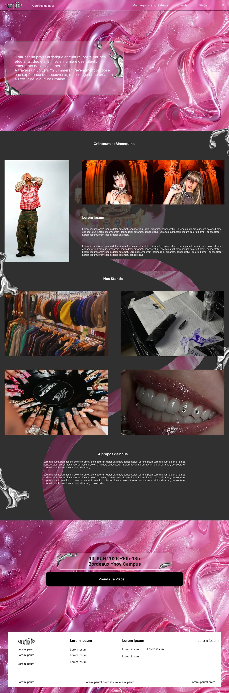
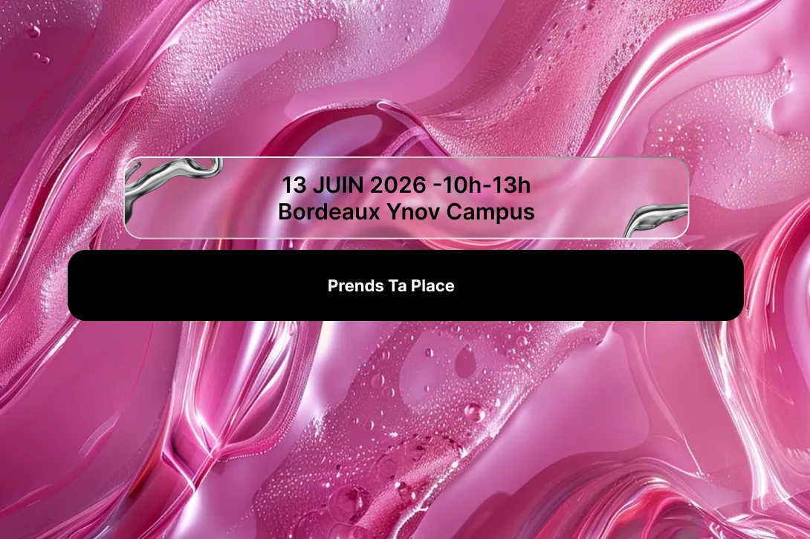
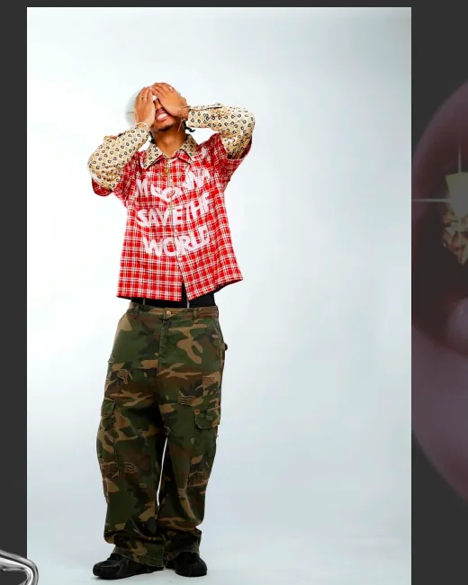
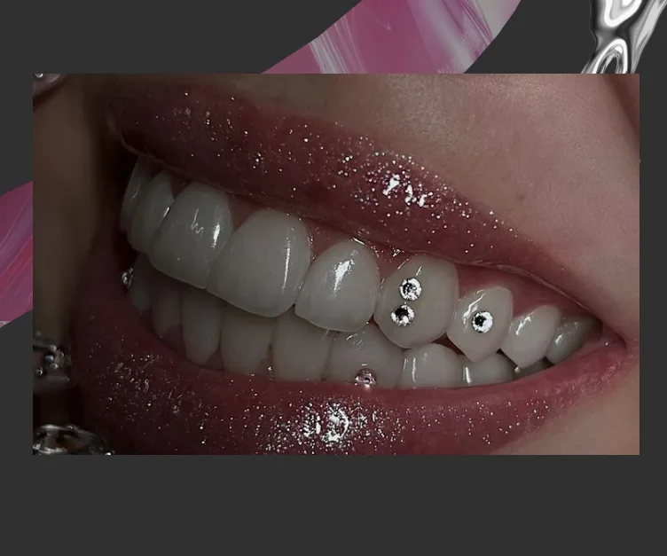

Unik

Wireframe et prototype sur Figma, pour un projet de groupe de première année, en 2025.
Voir le siteLe projet
Unik est un événement associatif : des créateurs et des mannequins de plusieurs écoles bordelaises défilent pendant les portes ouvertes d'Ynov, entre des stands de nail art, de tatouage et de friperie. Notre groupe devait concevoir la landing page qui fait venir le public. J'ai fait le wireframe et le prototype sur Figma, et j'ai participé aux visuels.
Le wireframe fixe la structure : présentation, créateurs et mannequins, stands, projet, infos pratiques, inscription, et un menu à quatre entrées. La direction artistique Y2K vient ensuite, avec du rose glossy, des textures liquides, du métal et des zones sombres. Le visuel est chargé, mais la hiérarchie tient, et tout le parcours mène au CTA « Prends ta place ».
Le wireframe
La maquette

Quatre rubriques dans le menu.



